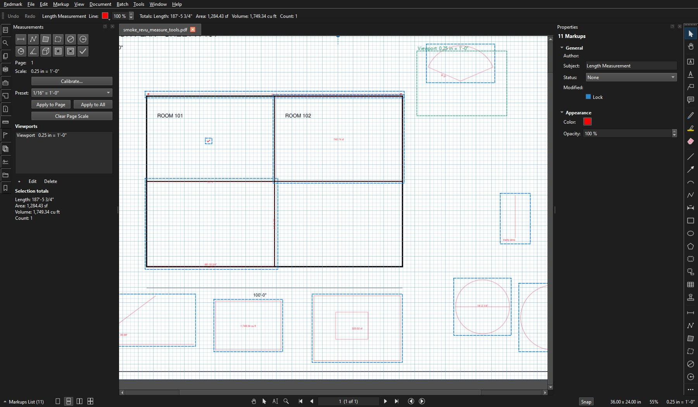
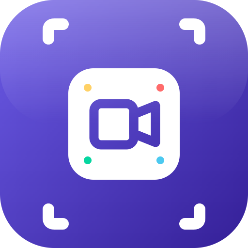
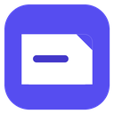
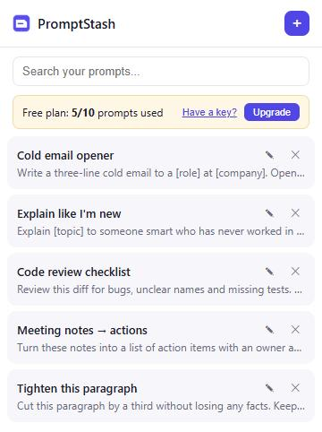

First product is live
The Freelancer Tax Tracker went up on Etsy with its listing photos, read-me and instructions guide. The folder structure I set up means the next two products follow the same path.
I'm a construction project manager who builds software with an AI pair. This is the showroom: what each project does, what it looks like, and the build journal behind it. No downloads here — just the work.
The projects with the most to show.

Takeoff: lengths, areas and counts, totalled in the Measurements panel.
A Windows PDF markup and quantity-takeoff app for construction drawings — built because I wanted the parts of Bluebeam Revu I use every day, on my own terms. Calibrated measurements, clouds, callouts, stamps, a tool chest, layers and search across open documents.
The Etsy listing video (sample data).
A small shop of spreadsheet templates for people who track their own money: freelancers, gig drivers and resellers. Each product ships as a Google Sheet and Excel file with an instructions guide. First product went live November 22.
Quick builds that solve one annoyance well.

Hotkey, drag a region, and a GIF lands on your clipboard. Trim and resize after.

Browser extension: save your best prompts once, insert them into any chat box.

Tray utility and extensions that tidy windows and tabs after idle time, across monitors.
Short dev-log entries. Notes from the build, newest first.
The Freelancer Tax Tracker went up on Etsy with its listing photos, read-me and instructions guide. The folder structure I set up means the next two products follow the same path.
Redmark went from empty folder to the PDF tool I use at work every day. The trick was writing down how Revu actually behaves, panel by panel, before building each piece.
Every app follows the same playbook, so a project can pick up where it left off in any session.
Pick a reference app and write down how it really behaves.
Get interviewed on the plan until the gaps show.
A one-page spec with a clear definition of done.
Three items at a time, test-first, reviewed, committed.
Installer and in-app updates once it earns them.